VRayOSLMtl
VRayOSLMtl Overview
The VRayOSLMtl material can be used to load OSL shader code files (.osl) or OSL object code files (.oso) and render them directly with V-Ray. The VRayOSLMtl plug-in can be used with shaders that write in closure color output parameters. See the V-Ray OSL page for more detailed description and examples.
VRayOSL Parameters
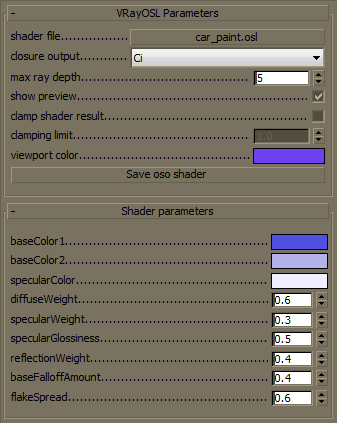 The general parameters of the VRayOSLMtl material control the general characteristics of the shader. Any additional shader-specific parameters are listed in additional rollouts.
Shader file - specifies the .osl or .oso file which contains the shader (object) code. This button control also supports context menu with Clear, Reload and Open Folder Location options. If you edit your OSL shader the new version would be loaded only after a Clear or a Reload option has been selected.
Closure output - specifies the closure color source for the materials's output. The built-in output closure color parameter Ci is selected by default.
Max ray depth - specifies the maximum reflection/refraction depth for the shader.
Show preview - determines whether to render a shader preview in the material editor.
Clamp shader result - determines whether to force the result in the [0, Clamping limit] range or not.
Clamping limit - specifies the upper clamp limit if Clamp shader result is enabled.
Viewport color - specifies the diffuse component of the material used in the viewport shading.
Save oso shader - enabled only if an .osl shader is loaded this button control allows the user to save it as an object code shader (.oso).
Example: Mandelbrot Texture
This example generates a simple Mandelbrot set using texture coordinates.
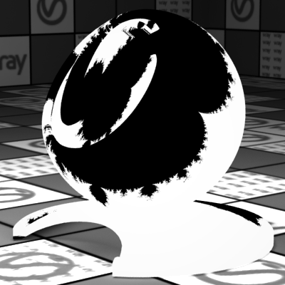
Rendered shader
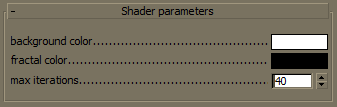
Shader parameters
Shader source code:
File: mandelbrot.osl
shader
mandelbrot
(
color background_color = color (1.0),
color fractal_color = color (0.0),
int max_iterations = 40,
output color result = fractal_color
)
{
float x0 = ( u * 3.5) - 2.5;
float y0 = ( v * 2.0) - 1.0;
float x = 0.0;
float y = 0.0;
int iteration = 0;
while ((x * x + y * y < 2.0 * 2.0) && (iteration < max_iterations))
float xtemp = x * x - y * y + x0;
y = 2.0 * x * y + y0;
x = xtemp;
iteration = iteration + 1;
}
if (x * x + y * y >= 2.0 * 2.0) {
result = background_color;
}
}
Example: Glass
This example presents a glass material.
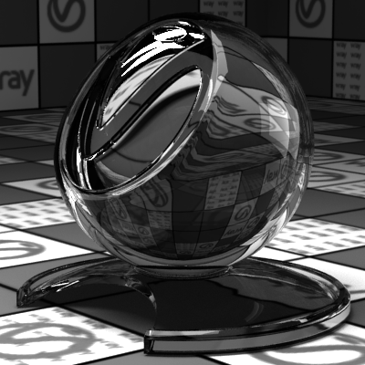
Rendered shader
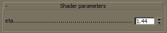
Shader parameters
Shader source code:
File: vray_glass.osl
surface
vray_glass
(
float eta = 1.44
)
{
Ci = reflection ( N , eta) + refraction ( N , eta, "auto", 1);
}
Example: Plastic
This example demonstrates a plastic material.
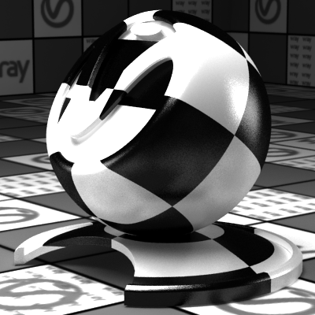
Rendered shader
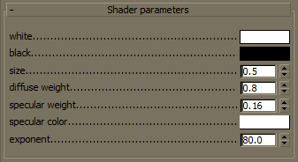
Shader parameters
Shader source code:
File: plastic.osl
surface
plastic
(
color white = 1,
color black = 0,
float size = 0.5,
float diffuse_weight = 0.8,
float specular_weight = 0.16,
color specular_color = 1,
float exponent = 80.0
)
{
float uPosition = ( mod ( abs ( u ), size) / size);
float vPosition = ( mod ( abs ( v ), size) / size);
color checkerValue = mix (black, white, ((uPosition < 0.5) == (vPosition < 0.5)) ? 1.0 : 0.0);
closure color diffuse_component = diffuse_weight * checkerValue * diffuse ( N );
closure color specular_component = specular_weight * specular_color * phong ( N , exponent, "trace_reflections", 1);
Ci = diffuse_component + specular_component;
}
Example: Carbon Fiber
This shader implements a carbon fiber surface.
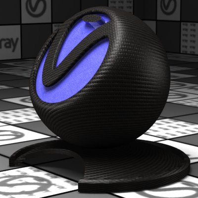
Rendered shader
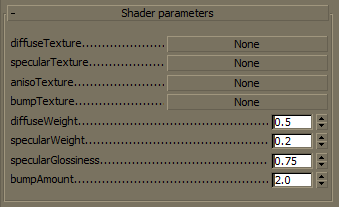
Shader parameters
Shader source code:
File: carbon.osl
normal getBumpedNormal( color centerColor, color uColor, color vColor, float amount)
{
vector avg = vector (0.333333);
float c = dot (avg, vector (centerColor));
float ddu = c - dot (avg, vector (uColor));
float ddv = c - dot (avg, vector (vColor));
return normalize ( normal ("shader", ddu, ddv, (1.000000 / amount)));
}
surface
carbon
[[ string description = "Carbon fiber material" ]]
(
string diffuseTexture = "diffuse.png",
string specularTexture = "spec.png",
string anisoTexture = "aniso.png",
string bumpTexture = "bump.png",
float diffuseWeight = 0.5,
float specularWeight = 0.2,
float specularGlossiness = 0.75,
float bumpAmount = 2.0
)
{
color diffuseColor = texture (diffuseTexture, u , v );
color specularColor = texture (specularTexture, u , v );
color anisoColor = texture (anisoTexture, u , v );
float anisotropy = 0.5 - anisoColor[0] * 4.0;
color center = texture (bumpTexture, u , v );
color uColor = texture (bumpTexture, u + 0.004, v );
color vColor = texture (bumpTexture, u , v + 0.004);
normal n = getBumpedNormal(center, uColor, vColor, bumpAmount);
Ci = diffuseWeight * diffuseColor * diffuse (n) +
specularWeight * specularColor *
ward (n, dPdu , specularGlossiness, specularGlossiness, "anisotropy", anisotropy);
}
Example: Car Paint
This shader simulates car paint material.
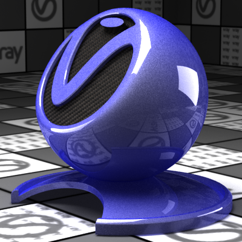
Rendered shader
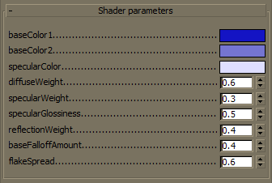
Shader parameters
Shader source code:
File: car_paint.osl
surface
car_paint
[[ string description = "Car paint material" ]]
(
color baseColor1 = color (0.08, 0.08, 0.77),
color baseColor2 = color (0.46, 0.46, 0.82),
color specularColor = color (0.87, 0.87, 1.0),
float diffuseWeight = 0.6,
float specularWeight = 0.3,
float specularGlossiness = 0.5,
float reflectionWeight = 0.4,
float baseFalloffAmount = 0.4,
float flakeSpread = 0.6
)
{
float cosNI = dot ( N , - I );
float baseBlendFactor = pow (cosNI, 1.0 / baseFalloffAmount);
color diffuseColor = mix (baseColor1, baseColor2, baseBlendFactor);
color reflectionColor = color (reflectionWeight * (1.0 - cosNI));
normal n = random () * 2.0 - 1.0;
float cosFlake = dot (n, - I );
if (cosFlake < 0.0) {
cosFlake = -cosFlake;
n = -n;
}
n = normalize ( N + flakeSpread * n);
Ci = diffuseWeight * diffuseColor * diffuse ( N ) +
specularWeight * specularColor * vray_blinn (n, specularGlossiness, 0.0, 0.0)
+ reflectionColor * reflection ( N );
}
Notes
-
The VRayOSLTex texture and VRayOSLMtl are only available in 3ds Max 2011 and later.
-
The VRayOSLMtl material automatically compiles OSL shaders to object code (OSO format) upon shader selection. No following compilations occur (even at render events). If the loaded OSL shader is modified use the context menu option Reload of the Shader file button for your changes to take effect.
-
An OSL compiler that translates *.osl files to *.oso files can be found in the tools subdirectory of V-Ray's root installation folder.
References
-
OSL home page at SPI - Open Shading Language home page at Sony Pictures Imageworks
-
OSL Google Code page - Google Code project page for Open Shading Language
-
OSL GitHub page - GitHub project page for Open Shading Language